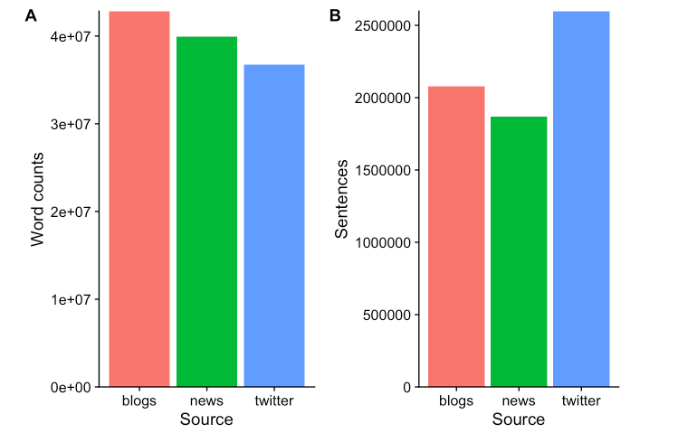
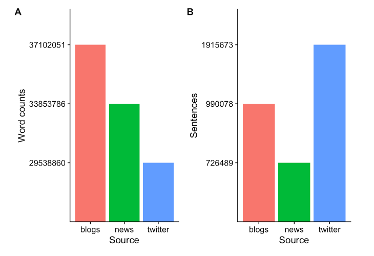
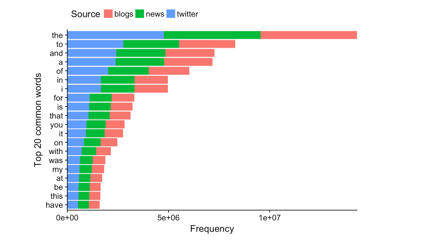
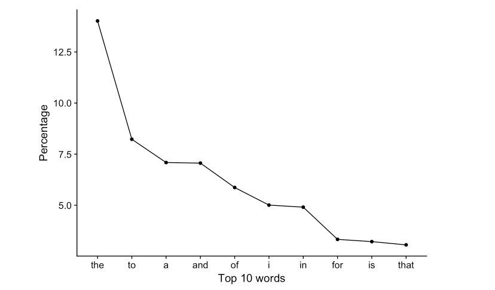
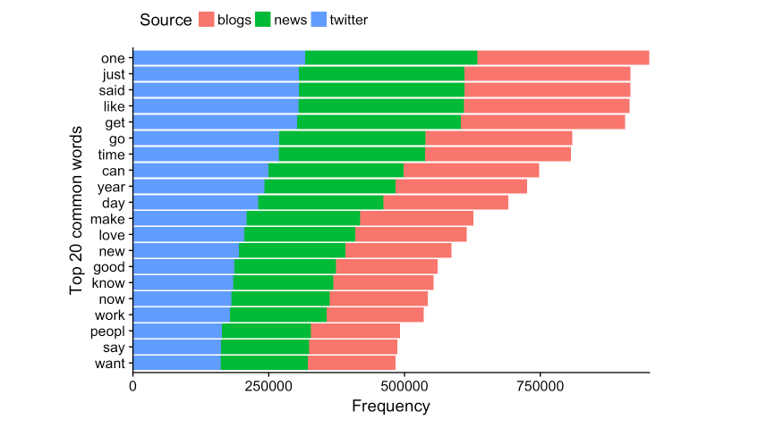
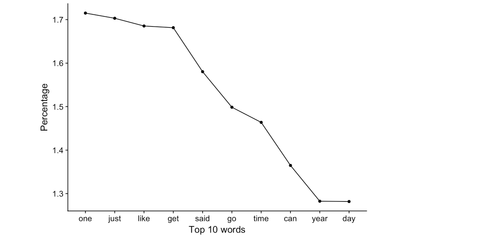
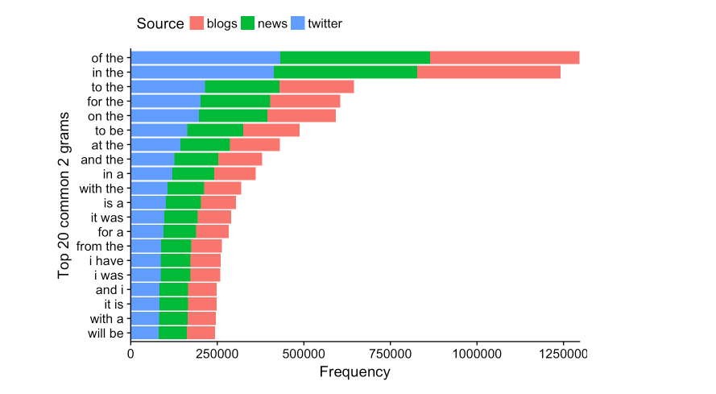
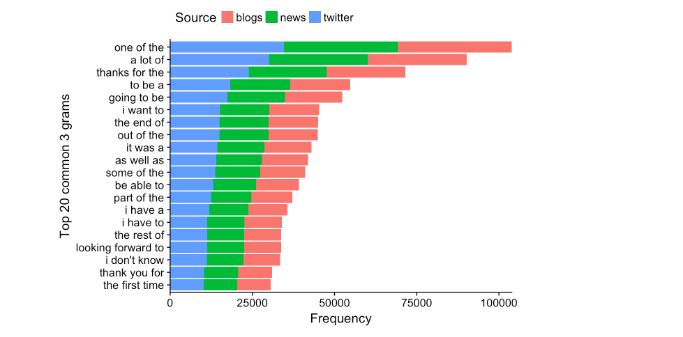

The first step in building a predictive model for text is understanding the distribution and relationship between the words, tokens, and phrases in the text. The goal of this task is to understand the basic relationships you observe in the data and prepare to build your first linguistic models.
The goal of this project is just to display that you've gotten used to working with the data and that you are on track to create your prediction algorithm. Please submit a report on R Pubs that explains your exploratory analysis and your goals for the eventual app and algorithm. This document should be concise and explain only the major features of the data you have identified and briefly summarize your plans for creating the prediction algorithm and Shiny app in a way that would be understandable to a non-data scientist manager.
You should make use of tables and plots to illustrate important summaries of the data set. The motivation for this project is to: 1. Demonstrate that you've downloaded the data and have successfully loaded it in. 2. Create a basic report of summary statistics about the data sets. 3. Report any interesting findings that you amassed so far. 4. Get feedback on your plans for creating a prediction algorithm and Shiny app.
library(quanteda)
library(readtext)
library(stringi)
library(ggplot2)
library(cowplot)
library(reshape2)
if(!file.exists('./final/en_US/en_US.blogs.txt')){
download.file('https://d396qusza40orc.cloudfront.net/dsscapstone/dataset/Coursera-SwiftKey.zip',
destfile = paste0(getwd(), 'Coursera-SwiftKey.zip'),
method = 'curl', quiet = T)
unzip('./Coursera-SwiftKey.zip')
}
rawBlogs <- readtext(paste0(getwd(), '/final/en_US/en_US.blogs.txt'))
rawNews <- readtext(paste0(getwd(), '/final/en_US/en_US.news.txt'))
rawTwts <- readtext(paste0(getwd(), '/final/en_US/en_US.twitter.txt'))
lines <- data.frame('source' = c('blog', 'news', 'twitter'),
'lines' = c(stri_count_fixed(rawBlogs, '\n'),
stri_count_fixed(rawNews, '\n'),
stri_count_fixed(rawTwts, '\n')))
lines
corpBlogs <- corpus(rawBlogs)
docvars(corpBlogs, 'Source') <- 'blogs'
corpNews <- corpus(rawNews)
docvars(corpNews, 'Source') <- 'news'
corpTwts <- corpus(rawTwts)
docvars(corpTwts, 'Source') <- 'twitter'
corpAll <- corpBlogs + corpNews + corpTwts
rm(rawBlogs, rawNews, rawTwts)
rm(corpBlogs, corpNews, corpTwts)
sum <- summary(corpAll)
sum
word <- ggplot(data = sum, aes(x = Source, y = Tokens, fill = Source)) +
geom_col() +
guides(fill = FALSE) +
scale_y_continuous(expand = c(0, 0)) +
ylab('Word counts')
sentence <- ggplot(data = sum, aes(x = Source, y = Sentences, fill = Source)) +
geom_col() +
scale_y_continuous(expand = c(0, 0)) +
guides(fill = FALSE)
plot_grid(word, sentence, labels = 'AUTO')

tokenization <- function(input, what = 'word', ngrams = 1L) {
## This function calls the tokens function from quanteda
## takes an input (character, corpus, or token object)
## and returns the tokenized object
# step1: tokenize based on input values
results <- tokens(x = input, what = what, ngrams = ngrams,
remove_numbers = T, remove_punct = T,
remove_symbols = T, remove_separators = T,
remove_twitter = T, remove_hyphens = T,
remove_url = T)
# step2: get a list of profanity
if (!file.exists('badWords.txt')) {
download.file('https://raw.githubusercontent.com/shutterstock/List-of-Dirty-Naughty-Obscene-and-Otherwise-Bad-Words/master/en',
dest = paste0(getwd(), 'badWords.txt'),
method = 'curl', quiet = T)
}
prof <- readLines('badWords.txt', skipNul = T)
# step3: remove profanity
results <- tokens_remove(results, pattern = prof)
}
tokWord <- tokenization(corpAll, what = 'word')
#tokWord <- tokens_tolower(tokWord)
sumWord <- summary(tokWord)
sumWord
tokSen <- tokenization(corpAll, what = 'sentence')
sumSen <- summary(tokSen)
sumSen
row.names(sumWord) <- c('blogs', 'news', 'twitter')
plotdf <- as.data.frame(sumWord[, 1])
tokWordP <- ggplot(data = plotdf, aes(x = row.names(sumWord), y = sumWord[, 1], fill = row.names(sumWord))) +
geom_col() +
guides(fill = FALSE) +
xlab('Source') +
ylab('Word counts')
row.names(sumSen) <- c('blogs', 'news', 'twitter')
plotdf <- as.data.frame(sumSen[, 1])
tokSenP <- ggplot(data = sum, aes(x = row.names(sumSen), y = sumSen[, 1], fill = row.names(sumSen))) +
geom_col() +
guides(fill = FALSE) +
xlab('Source') +
ylab('Sentences')
plot_grid(tokWordP, tokSenP, labels = 'AUTO')

dfmWord <- dfm(tokWord, tolower = T) #make a dfm object
topWordsAll <- topfeatures(dfmWord, n = 20)
#find top 20 words in all sources
topWordsBlog <- dfmWord[1, names(topWordsAll)]
#extract frequency of the same 20 words from blogs
topWordsNews <- dfmWord[2, names(topWordsAll)]
#extract frequency of the same 20 words from news
topWordsTwt <- dfmWord[3, names(topWordsAll)]
#extract frequency of the same 20 words from twitter
gram1dist <- as.data.frame(topWordsAll)
gram1dist <- cbind(gram1dist,
t(as.data.frame(topWordsBlog)[, -1]),
t(as.data.frame(topWordsNews)[, -1]),
t(as.data.frame(topWordsTwt)[, -1]))
colnames(gram1dist) <- c('all', 'blogs', 'news', 'twitter')
gram1dist$words <- row.names(gram1dist)
df <- melt(gram1dist, id.vars = c('words', 'all')) #convert to long format
ggplot(data = df, aes(x = reorder(words, all), y = all)) +
geom_col(aes(fill = variable)) +
coord_flip() +
ylab('Frequency') + xlab('Top 20 common words') +
scale_y_continuous(expand = c(0, 0)) +
guides(fill = guide_legend(title = 'Source')) +
theme(legend.position = 'top')

dfmWordPct <- dfm_weight(dfmWord, scheme = 'prop') * 100
dfWordPct <- data.frame(topfeatures(dfmWordPct))
colnames(dfWordPct) <- 'pct'
dfWordPct$words <- row.names(dfWordPct)
ggplot(data = dfWordPct, aes(x = words, y = pct, group = 1)) +
geom_line() +
geom_point() +
scale_x_discrete(limits = dfWordPct$words) +
xlab('Top 10 words') + ylab('Percentage')

remove = stopwords('english') and allow stem with stem = T for more flexible analysisdfmWordTrim <- dfm(tokWord, tolower = T, stem = T, remove = stopwords('english'))
# Extract top 20 words from each source
topWordsTrimAll <- topfeatures(dfmWordTrim, n = 20)
#find top 20 words in all sources
topWordsTrimBlog <- dfmWordTrim[1, names(topWordsTrimAll)]
#extract frequency of the same 20 words from blogs
topWordsTrimNews <- dfmWordTrim[2, names(topWordsTrimAll)]
#extract frequency of the same 20 words from news
topWordsTrimTwt <- dfmWordTrim[3, names(topWordsTrimAll)]
#extract frequency of the same 20 words from twitter
# Make data frame
gram1distT <- as.data.frame(topWordsTrimAll)
gram1distT <- cbind(gram1distT,
t(as.data.frame(topWordsTrimBlog)[, -1]),
t(as.data.frame(topWordsTrimNews)[, -1]),
t(as.data.frame(topWordsTrimTwt)[, -1]))
colnames(gram1distT) <- c('all', 'blogs', 'news', 'twitter')
gram1distT$words <- row.names(gram1distT)
# Plot 1 gram distribution
df <- melt(gram1distT, id.vars = c('words', 'all')) #convert to long format
ggplot(data = df, aes(x = reorder(words, all), y = all)) +
geom_col(aes(fill = variable)) +
coord_flip() +
ylab('Frequency') + xlab('Top 20 common words') +
scale_y_continuous(expand = c(0, 0)) +
guides(fill = guide_legend(title = 'Source')) +
theme(legend.position = 'top')

dfmWordTrimPct <- dfm_weight(dfmWordTrim, scheme = 'prop') * 100
dfWordTrimPct <- data.frame(topfeatures(dfmWordTrimPct))
colnames(dfWordTrimPct) <- 'pct'
dfWordTrimPct$words <- row.names(dfWordTrimPct)
ggplot(data = dfWordTrimPct, aes(x = words, y = pct, group = 1)) +
geom_line() +
geom_point() +
scale_x_discrete(limits = dfWordTrimPct$words) +
xlab('Top 10 words') + ylab('Percentage')

tokWord2g <- tokens_ngrams(tokWord, n = 2L, concatenator = ' ')
dfmWord2g <- dfm(tokWord2g, tolower = T)
top2gAll <- topfeatures(dfmWord2g, n = 20)
#find top 20 2 grams in all sources
top2gBlog <- dfmWord2g[1, names(top2gAll)]
#extract frequency of the same 20 2 grams from blogs
top2gNews <- dfmWord2g[2, names(top2gAll)]
#extract frequency of the same 20 2 grams from news
top2gTwt <- dfmWord2g[3, names(top2gAll)]
#extract frequency of the same 20 2 grams from twitter
gram2dist <- as.data.frame(top2gAll)
gram2dist <- cbind(gram2dist,
t(as.data.frame(top2gBlog)[, -1]),
t(as.data.frame(top2gNews)[, -1]),
t(as.data.frame(top2gTwt)[, -1]))
colnames(gram2dist) <- c('all', 'blogs', 'news', 'twitter')
gram2dist$words <- row.names(gram2dist)
df <- melt(gram2dist, id.vars = c('words', 'all')) #convert to long format
ggplot(data = df, aes(x = reorder(words, all), y = all)) +
geom_col(aes(fill = variable)) +
coord_flip() +
ylab('Frequency') + xlab('Top 20 common 2 grams') +
scale_y_continuous(expand = c(0, 0)) +
guides(fill = guide_legend(title = 'Source')) +
theme(legend.position = 'top')

#Find 3 grams
tokWord3g <- tokens_ngrams(tokWord, n = 3L, concatenator = ' ')
dfmWord3g <- dfm(tokWord3g, tolower = T)
#Identify top 20 most common 3 grams
top3gAll <- topfeatures(dfmWord3g, n = 20)[1:20]
top3gBlog <- dfmWord3g[1, names(top3gAll)]
top3gNews <- dfmWord3g[2, names(top3gAll)]
top3gTwt <- dfmWord3g[3, names(top3gAll)]
gram3dist <- as.data.frame(top3gAll)
gram3dist <- cbind(gram3dist,
t(as.data.frame(top3gBlog)[, -1]),
t(as.data.frame(top3gNews)[, -1]),
t(as.data.frame(top3gTwt)[, -1]))
colnames(gram3dist) <- c('all', 'blogs', 'news', 'twitter')
gram3dist$words <- row.names(gram3dist)
df <- melt(gram3dist, id.vars = c('words', 'all')) #convert to long format
ggplot(data = df, aes(x = reorder(words, all), y = all)) +
geom_col(aes(fill = variable)) +
ylab('Frequency') + xlab('Top 20 common 3 grams') +
coord_flip() +
scale_y_continuous(expand = c(0, 0)) +
guides(fill = guide_legend(title = 'Source')) +
theme(legend.position = 'top')

#sparcity can be accessed by dfmWord2g for all sources and dfmWord2g[1, ] for individual source
nGramSpars <- data.frame('source' = c('all', 'blog', 'news', 'twitter'),
'g2spars' = c(58.3, 57, 57, 60.8),
'g3spars' = c(62.9, 60.2, 61.9, 66.6))
nGramSpars
wordCoverage <- function(inputDfm, coverage){
## This function takes in a dfm object and a target coverage
## and returns the number of words required to reach that coverage
## and the actual coverage reached
freq <- dfm_weight(inputDfm, scheme = 'prop') * 100
#calculate percentage frequency for each word
totalWords <- nfeat(freq)
freq <- topfeatures(freq, n = totalWords)
coverageCount <- 0
wordN <- 0
for (i in 1:totalWords) {
if (coverageCount <= coverage) {
coverageCount <- coverageCount + freq[i]
wordN <- i
}
}
return(c(wordN, coverageCount))
}
wordCoverage(dfmWord, 50) #50%
wordCoverage(dfmWord, 90) #90%
wordCoverage(dfmWordTrim, 50) #50%
wordCoverage(dfmWordTrim, 90) #90%